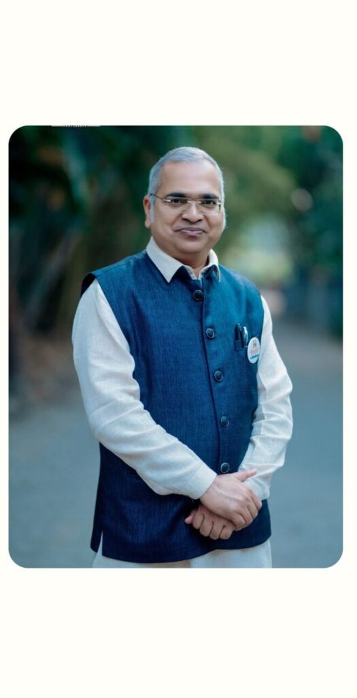
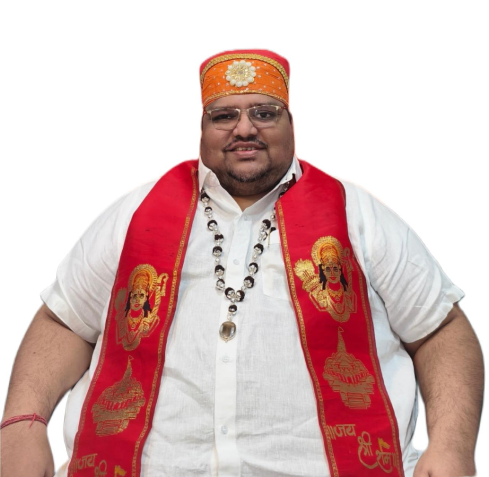

सनय छत्रपती
शासन पक्ष
संघर्षातून वारसा — जनतेसाठी समर्पित नेतृत्व
From Struggle to Legacy — Dedicated Leadership for the People
CONNECTAbout Sanay Chatrapati Shasan Paksh
Sanay Chatrapati Shasan Paksh is a registered political party headquartered in juhu,mumbai, Maharashtra. Inspired by the governance principles of Chhatrapati Shivaji Maharaj and Rajmata Jijau, the party is committed to good governance, transparency, social empowerment, and sustainable development.
Through people-centric leadership and public participation, we strive to create equal opportunities, strengthen democracy, and build a progressive future for every citizen.
Read MoreOur Leadership
श्री. पायस वर्गीस
संस्थापक राष्ट्रीय सचिव

प्राध्यापक नामदेवराव जाधव
राष्ट्रीय पक्षप्रमुख

श्री रुपेशशेठ हेमंतजी गुगळे पाटील (जैन)
राष्ट्रीय कार्यकारी अध्यक्ष